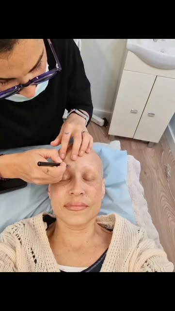
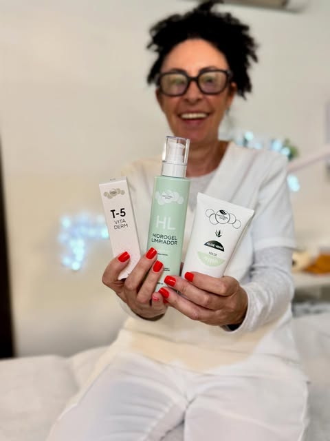
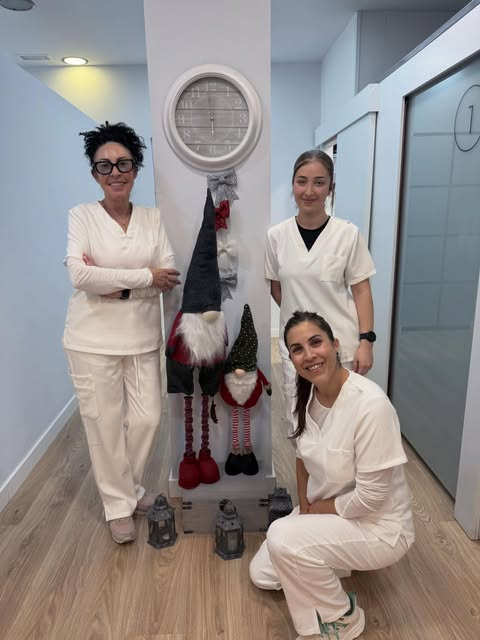

Centre fisiològic de la pell · Blanes
Única.
Tractaments de pell fets a mida amb el mètode The Natural One. Primer estudiem com és la teva pell; després la tractem, setmana a setmana, fins que recupera l'equilibri.
4,9 ★ · 46 ressenyes
La nostra manera
La pell respira, es defensa, envelleix i es repara. Per això la tractem com el que és: un òrgan viu. Res de protocols en sèrie: cada sessió es decideix segons com ha respost la teva pell.
Com treballem
Un mètode a mida per a cada pell
- 01
Estudi de la pell
Abans de cap tractament, estudiem la teva pell a fons: el biotip, com està ara, quins cosmètics fas servir i com et sents. La pell també reflecteix com estàs.
- 02
Fase d'equilibri, cada setmana
Al principi et veiem cada setmana a cabina. Cada sessió s'adapta a com ha respost la pell la setmana anterior.
- 03
Cura a casa
Et preparem una rutina amb cosmètica The Natural One: fórmules magistrals amb ingredients naturals, sense perfums ni colorants, que respecten la fisiologia i el pH de la pell.
- 04
Regeneració i manteniment
Quan la pell recupera l'equilibri, la regenerem i espaiem les sessions. L'objectiu és que es mantingui sana per ella mateixa.
Segons The Natural One, més del 70 % dels desequilibris de la pell els provoquen cosmètics inadequats. Per això també et diem què has de deixar de fer servir.
Centre de confiança The Natural OneTractaments
Tractaments a mida per a cada pell
Pells amb desequilibris
01Acne i pell grassa
Tractem l'acne en tres fases (equilibri, regeneració i manteniment), amb sessions setmanals al principi i productes que no obstrueixen el porus. Com expliquen les nostres clientes, la millora es veu.
02Rosàcia, dermatitis i pell sensible
Pells vermelles, irritades o que es descamen. Les calmem i les reparem amb fórmules suaus, sense irritants, i tenint en compte també el component emocional.
03Taques i marques
Busquem l'origen de cada taca (sol, hormones, deshidratació) i triem ingredients que regulen la melanina, sempre amb protecció solar.
04Estètica oncològica
Preparem la pell abans de la quimioteràpia o la radioteràpia, la cuidem durant el tractament i l'ajudem a recuperar-se després, amb productes sense irritants.
Salut i bellesa
05Estudi de la pell
El primer pas de qualsevol tractament: biotip, estat actual, hàbits i cosmètics que fas servir. D'aquí surt el teu pla, a cabina i a casa.
06Full Lift · fermesa facial
El nostre programa facial de reafirmació: to, fermesa i llum en sessions progressives.
07Antiaging · Natural WellAging
Envellir amb consciència: hidratació profunda, nutrició i regeneració de la pell amb la línia Natural WellAging de The Natural One.
08Hidratació i lluminositat
Per a pells apagades o deshidratades: hidratem les capes profundes de la pell, no només la superfície.
Cos i benestar
09Massatges i corporal
Massatge manual i tractaments corporals en un espai tranquil i sense sorolls.
10Osteopatia clínica de l'ATM
Tractament de l'articulació de la mandíbula: tensió, bruxisme i dolor facial abordats des de l'osteopatia clínica.
11Àrea mèdica
Tractaments de medicina estètica amb criteri mèdic dins el mateix centre.

Estètica oncològica
Quan la pell passa per un moment difícil, hi som.
La quimioteràpia i la radioteràpia canvien la pell. La preparem abans, la cuidem durant el tractament i l'ajudem a recuperar-se després, amb productes sense components irritants i, sobretot, amb temps i escolta.


En primera persona
Montse Gayete i equip
Més de 20 anys cuidant la pell de Blanes, amb un equip format en el mètode The Natural One.
«L'amabilitat i professionalitat de la Montse i el seu equip són una meravella. M'ha millorat moltíssim l'acne gràcies al tractament.» — Mirella N., Google · traduïda del castellà
La teva empremta
Escriu el teu nom.
Mira que única ets.
Cada nom dibuixa una empremta diferent. Com la teva pell.
Reserva l'estudi de la teva pellRessenyes
«Vaig cada mes i sempre en surto molt contenta. Les instal·lacions estan molt ben cuidades i tenen moltíssims serveis.»
Laia S. · traduïda del castellà
«Sempre que vaig a Blanes demano hora a Centre Únic. Professionals, atentes, un lloc relaxat i sense sorolls.»
Ressenya a Google · traduïda del castellà
«Molt bon tracte: fa més de 20 anys que hi vaig i m'han ajudat molt en tot moment.»
Ressenya a Google · traduïda del castellà
Visita
Carrer Jaume I, 4
17300 Blanes
- Dilluns
- Tancat
- Dimarts – divendres
- 9:00 – 13:00 · 15:00 – 20:00
- Dissabte
- 9:00 – 13:00
- Diumenge
- Tancat
Centre Únic · Centre fisiològic de la pell · Blanes